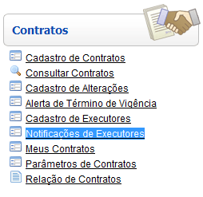
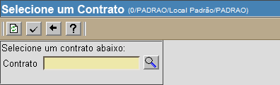
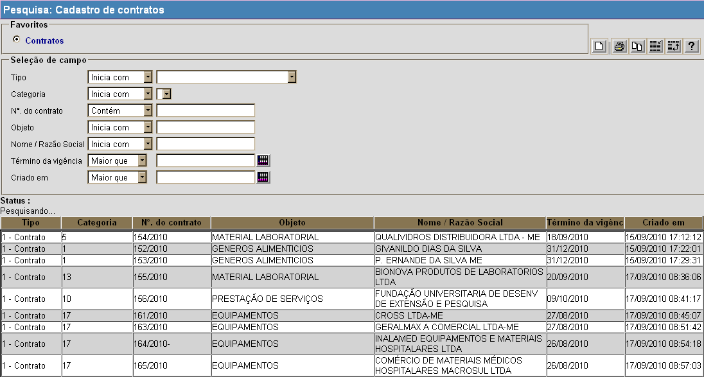
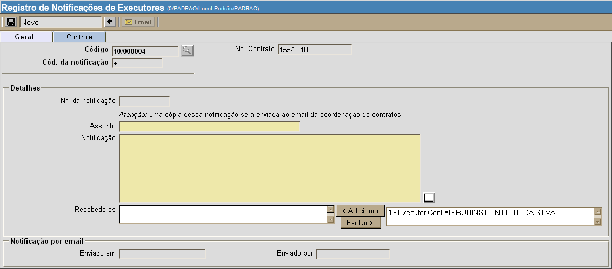

Notificações de Executores [ Voltar ]Utilize este formulário para registrar notificações enviadas a executores. O formulário "Notificações de executores" encontra-se dentro do menu "Contratos". 
Ao clicar no menu "Notificações de executores", o sistema exibirá a seguinte tela: 
1º Passo: clique no botão  para
selecionar o contrato para o qual deseja cadastrar uma alteração. Ao clicar no botão , a
seguinte tela será aberta: para
selecionar o contrato para o qual deseja cadastrar uma alteração. Ao clicar no botão , a
seguinte tela será aberta: 
Utilize os filtros disponíveis para localizar o contrato desejado. Os filtros disponíveis para auxiliar a localização do contrato são:
Dicas para
preenchimento dos campos de data:
Data atual: digite o sinal . (ponto) e pressione a tecla "Enter" para que o sistema retorne a data atual; Data do mês corrente: digite o dia do mês e pressione a tecla "Enter" para que o sistema retorne o mês e ano correntes; Dias a contar da data atual: digite o sinal + (mais) ou - (menos) antes do número de dias em referência à data atual e pressione a tecla "Enter" para a data anterior ou posterior à data atual. Exemplo: se a data
atual é 20/10/2010,
digite "+10"
e pressione a tecla "Enter" para que o sistema retorne o dia 30/10/2010
Após localizar e selecionar com um clique o contrato desejado, a seguinte tela será aberta: 
2° Passo: preencha a notificação. Os campos em amarelo são obrigatórios. Importante: para adicionar recebedores à notificação, clique no nome do executor (campo "Recebedores", à direita) e, em seguida, clique no botão  . .3° Passo: se todos os dados estiverem corretos, clique no botão  para salvar a
notificação. para salvar a
notificação. 4° Passo: clique no botão  para confirmar a
notificação e enviá-la por email aos recebedores selecionados e à
coordenação de contratos. Uma vez confirmada a
notificação, esta será exibida na seção "Notificações enviadas deste
contrato", na parte inferior da tela. para confirmar a
notificação e enviá-la por email aos recebedores selecionados e à
coordenação de contratos. Uma vez confirmada a
notificação, esta será exibida na seção "Notificações enviadas deste
contrato", na parte inferior da tela. |